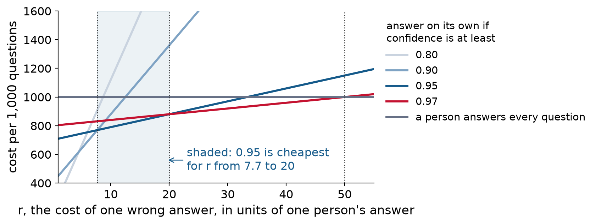

Costs, recalibration, and confidence from language models
On Tuesday, Gemma-2-2B was badly overconfident on BIG-Bench Hard. At a threshold of 0.90, the tool would answer 39% of questions on its own, and 42% of those answers would be wrong (95% interval 40% to 44%). Gemma’s confidence promised about 3%.
Suppose the team finds a better-calibrated model and checks it on 1,000 questions its own users asked, with known answers. The team still has to choose a threshold. Today we work out how.
Then Lab 6 checks whether two larger language models’ confidence means what it says.
The better-calibrated model, on the team’s 1,000 questions:
| Answer on its own if confidence is at least | Share answered on its own | Error rate among those answers |
|---|---|---|
| 0.97 | 20% | 2.0% |
| 0.95 | 30% | 3.0% |
| 0.90 | 60% | 8.0% |
| 0.80 | 80% | 11.5% |
| 0.70 | 90% | 13.6% |
Every row is a possible rule. Raising the threshold buys a lower error rate with more of a person’s time.
Statistics cannot pick the row alone. It depends on what a person’s time costs and what a wrong answer costs.
Measure cost in units of one person answering one question. Let r be the cost of one wrong answer the tool gives, in those units. Assume a person always gets the answer right. Then for 1,000 questions,
\text{cost} = (\text{questions a person answers}) + r \times (\text{wrong answers the tool gives on its own}).
| Threshold | Questions a person answers | Wrong answers | Cost if r = 5 | Cost if r = 10 | Cost if r = 30 |
|---|---|---|---|---|---|
| 0.97 | 800 | 4 | 820 | 840 | 920 |
| 0.95 | 700 | 9 | 745 | 790 | 970 |
| 0.90 | 400 | 48 | 640 | 880 | 1,840 |
| 0.80 | 200 | 92 | 660 | 1,120 | 2,960 |
| a person answers every question | 1,000 | 0 | 1,000 | 1,000 | 1,000 |
Three values of r give three different best thresholds.

| If r is between | 2.4 and 3.3 | 3.3 and 4.5 | 4.5 and 7.7 | 7.7 and 20 | 20 and 50 | above 50 |
|---|---|---|---|---|---|---|
| the cheapest threshold is | 0.70 | 0.80 | 0.90 | 0.95 | 0.97 | a person answers every question |
The team decides a wrong answer costs about 15 times a person’s answer. Which threshold is cheapest, and how much would r have to change to change the answer?
At r = 15: threshold 0.95 costs 700 + 15 \times 9 = 835, threshold 0.97 costs 800 + 15 \times 4 = 860, and threshold 0.90 costs 400 + 15 \times 48 = 1{,}120. Use 0.95.
The answer stays 0.95 as long as r is between 7.7 and 20. So the team does not need to know r exactly. It only needs to agree that a wrong answer costs between about 8 and 20 times a person’s answer.
What to tell the team:
If a wrong answer costs between about 8 and 20 times a person’s answer, a threshold of 0.95 is cheapest: the tool would answer about 30% of questions on its own, with about 3% of those answers wrong (95% interval 1.6% to 5.6%). If wrong answers cost more than that, raise the threshold to 0.97. Above about 50, the tool should not answer anything on its own.
The costs also rest on estimated error counts. With only 9 and 4 errors behind the 0.95 and 0.97 rows, the flip point at 20 is itself uncertain. More questions with known answers at high confidence would sharpen it.
Back to Week 4’s wildlife team, which makes a two-way call on each photo. A wrong “empty” call means a missed animal. A wrong “animal” call costs a person a few seconds later on.
Call a photo “animal” when that has the lower expected cost:
p \times C_{\text{miss}} \;>\; (1 - p) \times C_{\text{false alarm}} \quad\Longleftrightarrow\quad p \;>\; \frac{C_{\text{false alarm}}}{C_{\text{false alarm}} + C_{\text{miss}}}.
If a missed animal costs 4 times a false alarm, call “animal” whenever p > 1/5 = 0.2, not 0.5. The cutoff need not be 0.5.
This formula reads p as a probability, so it is only right if p is calibrated. If the detector’s low probabilities are too low, a cutoff chosen this way misses more animals than planned.
The threshold table asks only which questions have the highest confidence. Suppose we replace every confidence with a new number but keep the order. At any share of questions the tool answers, the same questions are answered, with the same error rate. Only the label on each threshold changes.
So there are two different uses of a confidence:
An overconfident model can still rank questions well. Know which use you are making.
Recalibration replaces the model’s confidences with new ones that match observed accuracy. The most common method, temperature scaling, divides the model’s internal score by one fitted number. For a question with two options, it keeps the order of the confidences.
So recalibration can fix the numbers printed on the thresholds, but it cannot change which questions the tool answers at a given share.
Because it is fitted to data:
The threshold rule needs the reliability diagram’s points to rise from left to right. If answers with confidence 0.95 were less accurate than answers with confidence 0.85, raising the threshold would let worse answers through.
This happens when one kind of question fools the model in a consistent way: a task it is confidently bad at, or a question unlike anything in its training data. A model always picks some option, even when it has no idea.
Check the order in the reliability diagram, with its intervals, before selling a threshold rule.
Token probabilities. On a multiple-choice question, a language model gives a probability to each answer option, A through D. These come from the model’s softmax, so reliability diagrams apply directly. The API has to return them; they are often called log-probabilities.
Confidence in words. Asked how sure it is, the model may write “I’m 90% sure.” That is generated text, produced the same way as the rest of its answer. It is a claim about a claim, and it has to be checked like any other claim.
Confidence stated in words tends to be overconfident and to bunch at round numbers like 90% and 95%. Do not mix the two kinds in one diagram.
In pairs, find the problems and rank them by how much damage they do.
“Our model’s confidence threshold is set at 0.90, so the questions it answers on its own have at most a 10% error rate. Across all questions, its average confidence is 88% and its accuracy is 87%, so it is nearly perfectly calibrated. No one needs to check the answers it gives on its own.”
Two larger models from Lab 5, on BIG-Bench Hard: Qwen2.5-7B, which the team chose in Homework 5, and Llama-3.1-8B. Each answer comes with the model’s confidence, computed the same way as Gemma’s on Tuesday. The team wants the tool to answer on its own only when the model is confident.
You will end with what you would tell the team.
Checkpoint 6 covers this week’s two lectures. It opens after class today and is due Tue Mar 2. Midterm: Thu Mar 4, in class. Teams and track preferences are due the same day.